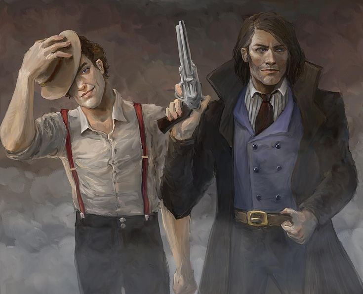

Where to Start?
Not sure where to start in the Cosmere? Here’s a guide to help you choose the perfect book to begin your journey:
Mistborn Era 1
A rebellion story featuring an immortal tyrant, oppressive nobility, and a unique metal-based magic system.
Mistborn Era 2
A world transitioning into an industrial revolution with magic, detective work, and old mysteries.
The Stormlight Archive
An epic fantasy saga featuring knights, spren, and high-stakes conflicts on an alien-like world.
Warbreaker
A standalone book about royal intrigue, living colors, and a god who doesn’t believe in himself.
Dawnshard
A novella that expands on the mysteries of the Dawnshard and explores new facets of the Cosmere’s interconnected universes.
White Sand
A graphic novel that blends adventure, discovery, and a complex magic system tied to a unique sun cycle.
Tress of the Emerald Sea
A whimsical tale about an islander’s adventure that combines mystery, magic, and romance.